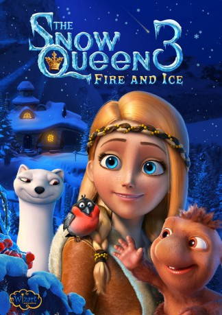

 
 IMDB-Wertung: 5.9 / 10
IMDB-Wertung: 5.9 / 10  Metascore:
Metascore: 
The rare gift of getting into all kinds of trouble is their family trait. What else can you expect from the ones raised among trolls in snowy lands? But now Kai and Gerda have grown up and entered a new stage - this time they are going to cause a global disaster...
Jahr: 2016
Dauer: 89 Minuten
FSK: 6
Land: Russland Studio: Ascot Elite Entertainment GroupTonspuren: DTS - ,
Untertitel:
Auflösung: 1080p (1920x808) Größe: 4894 MB
Genre: Sci-Fi, Komödie, Abenteuer, Animation/Trick, Familie
Regisseur: Aleksey Tsitsilin
Drehbuch: Andrey Korenkov
Soundtrack:
Darsteller:
Datei: X:\Kinder Collections\Schneekönigin\Schneekönigin 3, Die (2016, FSK6, 1920x808) 3D.mkv seit 29.11.2017
Festplatte: Kinder-Filme+Trick
 Es gibt insgesamt 9 Filme in der Gruppe 'Kinder Collections\Schneekönigin'
Es gibt insgesamt 9 Filme in der Gruppe 'Kinder Collections\Schneekönigin'